When Minimax Regret UED causes learning to stagnate and what to do about it.
Introduction - What is UED?
Unsupervised Environment Design (UED) is a paradigm where an adversary generates environment configurations for a reinforcement learning (RL) agent to learn on.
This adversary generally chooses levels in order to maximise some objective function; one common objective—and the one we deal with in this work—is to maximise the agent's regret, which is the difference between the performance of the optimal policy on that level and that of the agent.
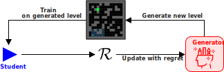
Illustrating the general process behind regret-based UED. An adversary generates a level, the agent interacts with it, and the adversary updates itself based on the agent's regret.
Taken with permission from here
In other words, regret measures how much better a particular agent could perform on a particular level. Empirically, training on these regret-maximising levels has been shown to improve generalisation to out-of-distribution levels in challenging domains . At equilibrium, UED methods theoretically result in a minimax regret policy, meaning that there is no other policy that has lower worst-case regret. This confers a certain degree of robustness, as it provides an upper bound on the worst-case performance gap.
Minimax regret (MMR) works well when the agent can simultaneously perform optimally on all levels: at convergence, the MMR policy would achieve zero regret for each level. However, this is not always possible in partially observable environments.
Consider the following example, where an adversary can sample T-mazes and normal mazes. In the T-mazes, the reward for reaching the goal is $1.0$ and $-1.0$ for failing. The reward for the mazes is $0.9$ for reaching the goal, and zero otherwise. Each T-maze looks identical from the agent's perspective, and its minimax regret behaviour is to go left or right with 50% probability. See this section for a derivation of this solution.
There are two policies in the following video. Both of these have the same worst-case regret (1.0) in the T-mazes, achieved by randomly choosing left or right. However, policy 1 is effectively random in the maze, whereas policy 2 actually goes to the goal. Both of these are minimax regret policies, but policy 2 is clearly better.
Using standard UED cannot guarantee that we won't get stuck with policy 1, even though policy 2 is possible! In general, there may be multiple minimax regret policies, and we aren't guaranteed to get the "best" one when using minimax regret.
We consider an underspecified partially-observable Markov decison process (UPOMDP) $\mathcal{M} = \langle A, O, \Theta, S, P_S, P_O, \mathcal{R}, \gamma \rangle$.
Here $A$ is the action space, $O$ is the observation space, and $S$ is the state space. $\Theta$ is the space of underspecified parameters commonly referred to as levels, $P_S: S \times A \times \Theta \to \Delta(S)$$\Delta(X)$ is the set of all probability distributions over the set $X$. is the level-conditional transition distribution. We denote the initial state distribution as $P_0:\Theta \to \Delta(S)$. In the partially observable setting, the agent does not directly observe the state, but an observation variable $o\in O$ that is correlated to the underlying state. $\mathcal{R}:S\times A\rightarrow \mathbb{R}$ is the scalar reward function, we denote instances of reward at time $t$ as $r_t=\mathcal{R}(s_t,a_t)$ and $\gamma$ is the discount factor. Each set of underspecified parameters $\theta \in \Theta$ indexes a particular POMDP called a level. In our maze example above, the level determines the location of the goal and obstacles but dynamics such as navigating and the reward function remain shared across all levels.
At time $t$ the agent observes an action-observation history (or trajectory) $\tau_t=\langle o_0, a_0, ..., o_{t-1}, a_{t-1}, o_t \rangle$ and chooses an action according to a trajectory-conditioned policy $a_t\sim \pi(\tau_t)$. We denote the set of all trajectory-conditioned policies as $\Pi\dot = \{\pi\vert \pi:\mathcal{T}\rightarrow\Delta(A)\}$ where $\mathcal{T}$ denotes the set of all possible trajectories.
For any level $\theta$, the agent's goal is to maximise the expected discounted return (called utility), which we denote as:
U_\theta(\pi)\dot = \mathbb{E}_{\pi,\theta}[ \sum_{t=0}^T \gamma^t r_t ],
where $\mathbb{E}_{\pi,\theta}$ denotes the expected value on $\theta$ if the agent follows policy $\pi$ .
We denote an optimal policy for level $\theta$ as $\pi^\star_\theta\in \argmax_{\pi'} U_\theta(\pi')$.
Unsupervised Environment Design
Unsupervised Environment Design (UED) is posed as a two-player game, where an adversary $\Lambda$ selects levels $\theta$ for an agent $\pi$ to train on. The adversary's goal is to choose levels that maximise some utility function, e.g., a constant utility for each level corresponds to domain randomisation.
One commonly-used objective is to maximise the agent's regret. Formally, the regret of policy $\pi$ with respect to an optimal policy $\pi_\theta^\star$ on a level $\theta$ is equal to how much better $\pi_\theta^\star$ performs than $\pi$ on $\theta$, $\text{Regret}_\theta(\pi) \dot = U_\theta(\pi_\theta^\star) - U_\theta(\pi)$.
If regret is used as the payoff, at equilibrium of this two-player zero-sum game, the policy satisfies minimax regret:
Constraining policies to the set of MMR policies $\Pi^\star_\text{MMR}$ has several advantages: when deploying our policy, our regret can never be higher than the minimax regret bound, so the policy has a certain degree of robustness to the set of levels we train on. Using minimax regret also results in an adaptive curriculum that increases in complexity over time, leading to the agent learning more efficiently.
Further, choosing levels based on maximising regret avoids sampling levels that are too easy (as the agent already performs well on these) or impossible (where the optimal policy also does poorly). This is in contrast to standard minimax, which tends to choose impossible levels that minimise the agent's performance.
One problem with MMR is that, since regret computation requires access to the optimal policy, regret must in practice be approximated. A more serious issue with using minimax regret in isolation is that there is no formal method to choose between policies in $\Pi^\star_\text{MMR}$. Typically it is chance and initialisation that determines the policy an algorithm converges to. While all minimax regret policies protect against the highest-regret outcomes, these events may be rare and there may be significant differences in the utility of policies in $\Pi^\star_\text{MMR}$ in more commonly encountered levels.
Two-Player Game Formulation of UED
In UED, it can be helpful to think of the problem as a two-player zero sum matrix game. Concretely, the adversary's strategy set is $\Theta$, the set of all levels. The agent's strategy set is $\Pi$, the set of all policies. For a particular $\langle \theta, \pi \rangle$, the payoff (which the adversary aims to maximise and the agent seeks to minimise) is the regret of $\pi$ on $\theta$: $\text{Regret}_\theta(\pi)$.
The equilibrium of UED is when the adversary selects a level and the agent chooses a particular policy, such that neither can improve their payoff by only changing their strategy. We note that equilibria may consist of mixed strategies, i.e., probability distributions over the strategy set. In this way, the adversary can end up sampling a distribution of levels, and the policy can stochastically chooses behaviour.
As a concrete example, let's calculate the equilibrium in the T-Maze example. We do this by explicitly constructing the decision matrix for the T-mazes. The table on the left illustrates the reward for each action in each environment, whereas the right table shows the regret. UED treats this as the payoff matrix for a two-player zero-sum game, where the agent chooses a column, and the adversary chooses a row. Since this game is similar to matching pennies, the equilibrium is for the agent to choose left or right with 50% probability, and the adversary to choose each environment with 50% probability. This results in a worst-case regret of 1.0, which is the best we can do in this environment.
Move Left
Move Right
Goal on Left
+1
-1
Goal on Right
-1
+1
Reward for each action in each T-Maze environment
Move Left
Move Right
Goal on Left
0
2
Goal on Right
2
0
Regret for each action in each T-Maze environment
The Limits of Minimax Regret
To elucidate the issues with using minimax regret in isolation, we analyse the set of minimax regret policies $\pi^\star_\text{MMR}$. For any $\pi_\text{MMR}\in \Pi^\star_\text{MMR}$ and $\vartheta \in \Theta$, it trivially holds that:
However, it is unclear whether all policies in $\Pi^\star_\text{MMR}$ are equally desirable across all levels.
In the worst case, the minimax-regret game will converge to an agent policy that only performs as well as this bound, even if further improvement is possible on other (non-minimax regret) levels. In addition, the adversary's distribution will not change at such Nash equilibria, by definition. Thus, at equilibrium the agent will not be presented with levels outside the support of $\Lambda$ and as such will not have the opportunity to improve further---despite the possible existence of other MMR policies with lower regret outside the support of $\Lambda$.
The following figure illustrates this problem: Minimax regret only guarantees that all levels have regret equal to or lower than the best worst-case regret, even if a lower regret is possible (e.g. on the right).
Minimax Regret only guarantees this bound,
Even if a lower regret is possible on other levels!
This observation demonstrates that minimax regret does not always correspond to learnability: there could exist UPOMDPs with high regret on a subset of levels on which an agent is optimal (given the partial observability constraints), and low regret on levels in which it can still improve. Our key insight is that optimising solely for minimax regret can result in the agent's learning to stop prematurely, preventing further improvement across levels outside the support of MMR levels. We summarise this regret stagnation problem of minimax regret as follows:
The minimax regret game is indifferent to which MMR policy is achieved on convergence
Upon convergence to a policy in $\Pi^\star_\text{MMR}$, no improvements occur on levels outside the support of $\Lambda$.
Refining Minimax Regret
Now, how do we fix this? Loosely, our idea is that we want to get a minimax regret policy and improve it. The improvement should be done in such a way that we do not lose minimax regret guarantees on the existing MMR levels. We can do this by restricting our new policy to act in exactly the same way as the MMR policy in all trajectories that can be seen using $\pi$ and $\Lambda$.
We first define the notion of a realisable trajectory, which is necessary to understand the rest of this section.
Realisable Trajectories
For a set $\Theta'$ and policy $\pi$, $\mathcal{T}_{\pi}(\Theta')$ denotes the set of all trajectories that are possible by following $\pi$ on any $\theta \in \Theta'$. We call a trajectory $\tau$ realisable under $\pi$ and $\Theta'$ iff $\tau \in \mathcal{T}_{\pi}(\Theta')$. I.e., $\mathcal{T}_{\pi}(\Theta')$ is the set of all trajectories that have nonzero probability given a set $\Theta'$ and a policy $\pi$.
We next introduce the refined minimax regret game:
Refined Minimax Regret Game
Given a UPOMDP with level space $\Theta$, suppose we have some policy $\pi$ and some subset of levels $\Theta' \subseteq \Theta$.
We introduce the refined minimax regret game under $\pi$ and $\Theta'$, a two-player zero-sum game between an agent and adversary where:
the agent's strategy set is all policies of the form
\pi'(a | \tau) = \begin{cases}
\pi(a | \tau) \text{ if } \tau \in \mathcal{T}_{\pi}(\Theta') \\
\bar{\pi}(a | \tau) \text{ otherwise}\end{cases}
where $\bar{\pi}$ is an arbitrary policy;
the adversary's strategy set is $\overline{\Theta} \dot = \Theta \setminus \Theta'$;
the adversary's payoff is $\text{Regret}_\theta(\pi')$.
In other words, $\pi'$ represents the set of policies that perform identically to $\pi$ in any trajectory possible under $\pi$ and $\Theta'$.
At Nash equilibrium, the agent will converge to a policy that performs identically to $\pi$ under all levels in $\Theta'$ (by definition), but otherwise will perform minimax regret optimally over $\overline{\Theta}$ with respect to these constraints. The adversary will converge onto a minimax regret equilibrium distribution with support only on levels in $\overline{\Theta}$.
This refined game is quite powerful, and it allows us to fix a policy's behaviour over a set of levels, and improve its worst-case regret in non-highest-regret levels!
We next present a few important theoretical results regarding the refined game, and the proofs can be found in the full paper.
Improving Non-Worst-Case Regret
Suppose we have a UPOMDP with level space $\Theta$. Let $\pi$ be some policy and $\Theta' \subseteq \Theta$ be some subset of levels. Let $(\pi', \Lambda')$ denote a policy and adversary at Nash equilibrium for the refined minimax regret game under $\pi$ and $\Theta'$. Then, (a) for all $\theta \in \Theta'$,
$\text{Regret}_\theta(\pi') = \text{Regret}_\theta(\pi))$; and (b) we have,
\max_{\theta \in \Theta \setminus \Theta'} \left\{\text{Regret}_\theta(\pi')\right\} \le \max_{\theta \in \Theta \setminus \Theta'} \left\{\text{Regret}_\theta(\pi))\right\}.
This intuitively states that the Nash solution of the refined minimax regret game retains the regret of $\pi$ on $\Theta'$, and monotonically improves worst-case regret on the $\Theta \setminus \Theta'$.
Minimax Refinement Theorem
Let $\langle \pi_1$, $\Lambda_1 \rangle$ be in Nash equilibrium of the minimax regret game.
Let $\langle \pi_i, \Lambda_i \rangle$ with $1 < i$ denote the Nash equilibrium solution to the refined minimax regret game under $\pi_{i-1}$ and $\Theta_i' = \bigcup_{j = 1}^{i-1} \text{Supp}(\Lambda_j)$. $\text{Supp}(\Lambda_j)$ denotes the support of $\Lambda$, i.e., all environments that it samples with nonzero probability.
Then, for all $i \geq 1$, (a) $\pi_{i}$ is minimax regret and (b) we have
\max_{\theta \in \Theta \setminus \Theta_i'} \left\{\text{Regret}_\theta(\pi_{i})\right\} \le \max_{\theta \in \Theta \setminus \Theta_i'} \left\{\text{Regret}_\theta(\pi_{i-1}))\right\}.
Finally, (c) for all $1 \leq j < i$ and $\theta \in \text{Supp}(\Lambda_j)$, $\text{Regret}_\theta(\pi_i) = \text{Regret}_\theta(\pi_j)$.
In other words, iteratively refining a minimax regret policy (a) retains minimax regret guarantees; (b) monotonically improves worst-case regret on the set of levels not already sampled by any adversary; and (c) retains regret of previous refinements on previous adversaries.
With all this out of the way, we can state our overall objective, the BLP:
Bayesian Level-Perfect Minimax Regret Policy
Let $\langle \pi_1, \Lambda_1 \rangle$ be in Nash equilibrium of the minimax regret game.
Let $\langle \pi_i, \Lambda_i \rangle$, $1 < i$ denote the solution to the refined game under $\pi_{i-1}$ and $\bigcup_{j = 1}^{i-1} \text{Supp}(\Lambda_j)$.
Policy $\pi_j$ is a Bayesian level-perfect minimax regret policy if $\bigcup_{k=1}^{j} \text{Supp}(\Lambda_k) = \Theta$.
Intuitively, this is saying that we first want the policy to be minimax regret. Given this constraint, we want to choose the policy that has lowest worst-case regret over all environments that are distinguishable from the MMR levels. We iterate this process until we have considered all levels.
Algorithm
Now, all of this was quite abstract. So what does this actually do? Well, the core idea is that we want to always keep minimax regret guarantees. The way we do this is to fix the policy's behaviour on all trajectories realisable under an MMR policy and adversary. We then improve the policy's worst-case regret on all other levels by solving the refined game. We repeat this process until we have considered all levels.
To demonstrate the benefit of this solution concept, we develop a proof-of-concept algorithm that results in a BLP policy at convergence. We call this algorithm Refining Minimax Regret Distributions, or ReMiDi for short.
This algorithm is a direct implementation of the solution concept above, and explicitly maintains a set of adversaries and policies. In practice, though, we only have one policy, and we restrict its updates to only occur on trajectories that are inconsistent with any previous adversary.
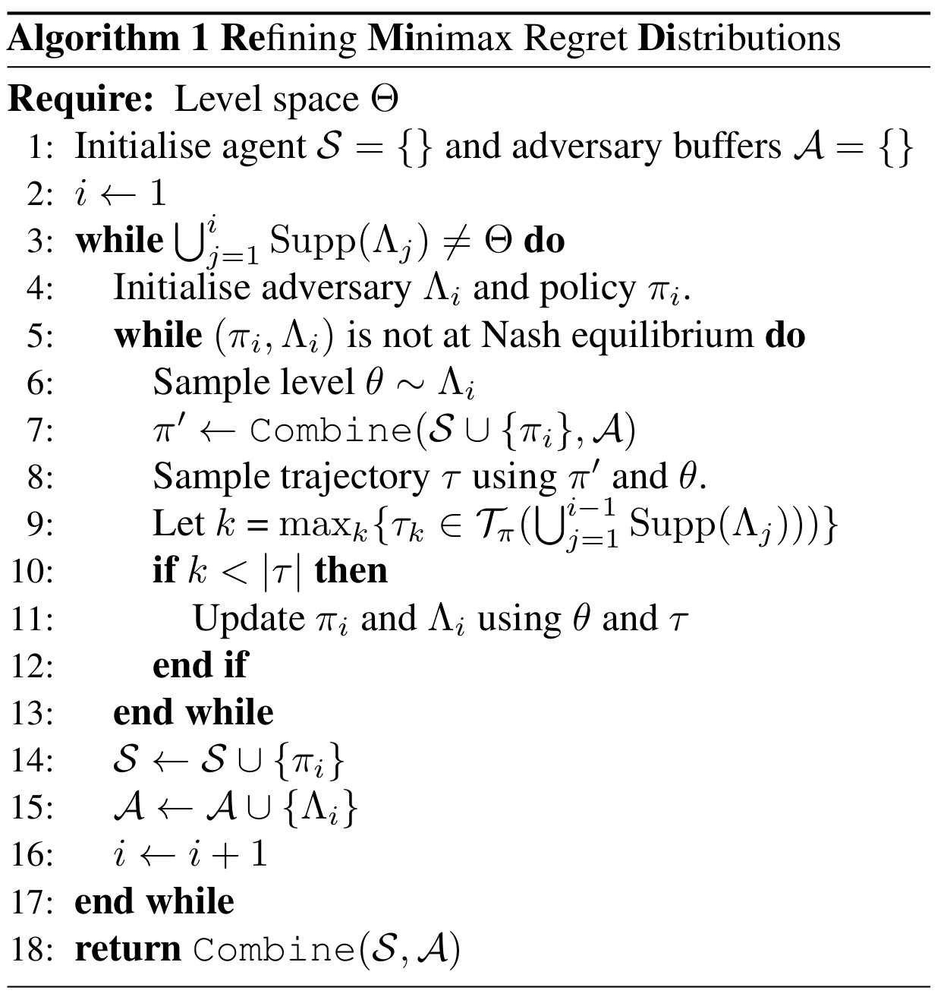
The ReMiDi Algorithm
The following figures illustrate what applying our method does, iteratively filling in behaviour for all non-previously sampled levels.
Here we show the iterative process of ReMiDi. First, we obtain a minimax regret policy, and all trajectories reachable under the MMR adversary and policy are coloured in blue. Thereafter, we solve a constrained MMR game, where the adversary cannot choose $\theta_1$ or $\theta_2$, and the policy must act according to $\pi_1$ whenever it is in a blue trajectory. This allows us to fill in the red behaviour, which improves upon the MMR policy's second-worst-case regret. This is repeated again with $\theta_4$.
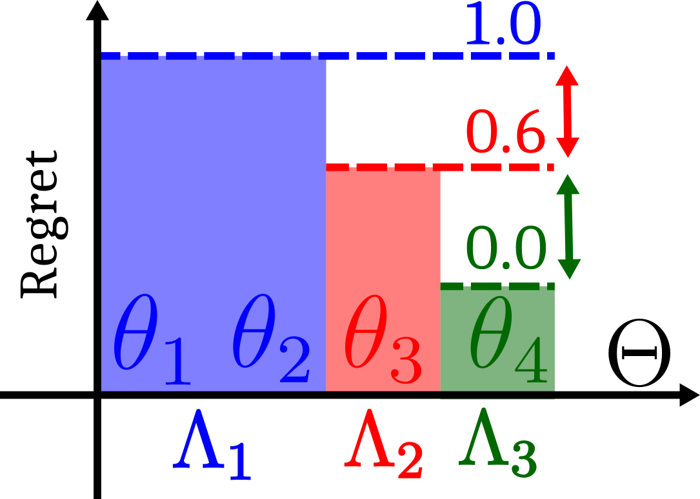Showing how the regret bound of all non-chosen levels decreases at every refinement iteration
Illustrating how iterative refinement results in a smaller set of policies.
Experiments
We perform several experiments in domains that exhibit irreducible regret and show that ReMiDi alleviates this problem.
Our experimental setup for the non-exact settings is as follows.
We compare against Robust PLR ($\text{PLR}^\perp$) , which is based on curating randomly-generated levels into a buffer of high-regret levels. At every step the agent is either trained on a sample of levels from the buffer, or evaluated on a set of randomly-generated levels. These randomly generated levels replace existing levels in the buffer that have lower regret scores. In robust PLR, the agent does not train on randomly generated levels.
Our ReMiDi implementation maintains multiple $\text{PLR}^\perp$ buffers, and we perform standard $\text{PLR}^\perp$ on the first buffer for a certain number of iterations.
We then perform $\text{PLR}^\perp$ again, but reject levels that have complete trajectory overlap with levels in a previous buffer.
Instead of explicitly maintaining multiple policies, we have a single policy that we update only on the parts of trajectories that are distinguishable from levels in previous buffers, approximately maintaining performance on previous adversaries.
Finally, ReMiDi assumes knowledge of whether a trajectory is possible given a policy and a set of levels, which we can compute exactly in each environment.
Exact Settings
We consider a one-step tabular game, where we have a set of $N$ levels $\theta_1, ..., \theta_N$. Each level $i$ corresponds to a particular initial observation $\tau_i$, such that the same observation may be shared by two different environments. Each level also has an associated reward for each action $a_j, 1 \leq j \leq M$.
We model the adversary as a $N$-arm bandit, implemented using tabular Actor-Critic. Each of its actions corresponds to a different level $\theta_i$.
In our ReMiDi implementation, we have a sequence of adversaries, each selecting levels where the observations are disjoint with any previous adversary.
In both cases, the agent is also a tabular Actor-Critic policy, with different action choices for each observation (equivalent to a trajectory) $\tau$.
When Minimax Regret is Sufficient
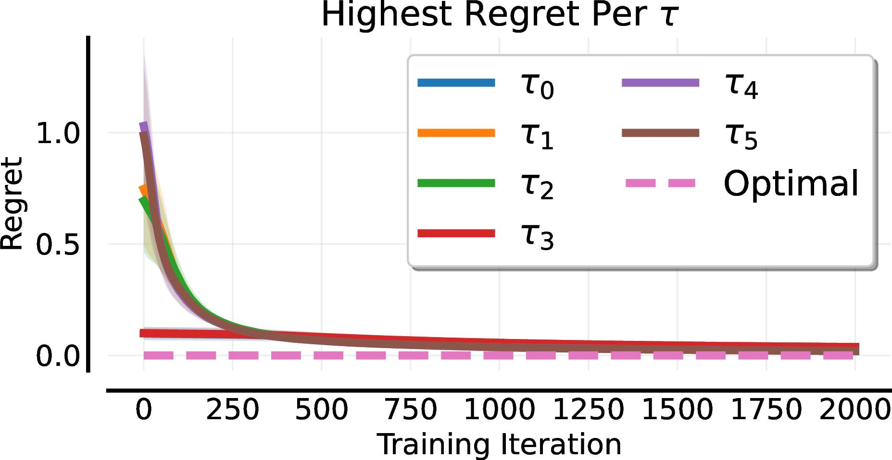
Regret
In the above figure, we first consider a case where minimax regret has none of the problems we discussed earlier. Here, each $\theta$ has a unique initial observation $\tau$, thus the level can be deduced solely from this observation. Minimax regret succeeds and converges to the globally optimal policy. Convergence occurs because a single policy can be simultaneously optimal over the set $\Theta$, as for every observation, there is one optimal action. The MMR policy is therefore also unique.
When Minimax Regret Fails
We next examine a UPOMDP where a single policy can no longer be simultaneously optimal over all levels. The setup is the same as the previous experiment, except that $\tau_2 = \tau_1$, $\tau_4 = \tau_3$, etc., meaning that there is some irreducible regret.
The figure below shows that regret-based UED rapidly obtains minimax regret, but fails to obtain optimal regret on the non-regret-maximising levels. By contrast, ReMiDi obtains optimal regret on all levels.
It does this by first obtaining global minimax regret, at which point it restricts its search over levels to those that are distinguishable from minimax regret levels. Since the agent's policy is not updated on these prior states, it does not lose MMR guarantees.
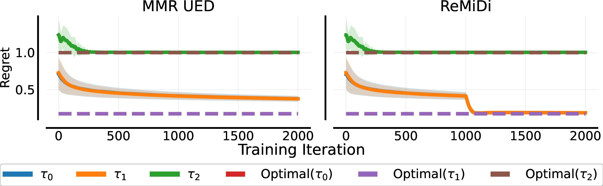Regret
We analyse this further by plotting the probability of each level being sampled over time. Regret-based UED rapidly converges to sampling only the highest-regret levels ($\theta_4$ and $\theta_5$), and shifts the probability of sampling the other levels to zero. By contrast, our multi-step process first samples these high-regret levels exclusively. Thereafter, these are removed from the adversary's options and it places support on all other levels.
This shows that, while we could improve the performance of regret-based UED by adding stronger entropy regularisation, or making the adversary learn slower, the core limitation remains: when regret does not correspond to learnability, minimax regret UED will sample inefficiently.
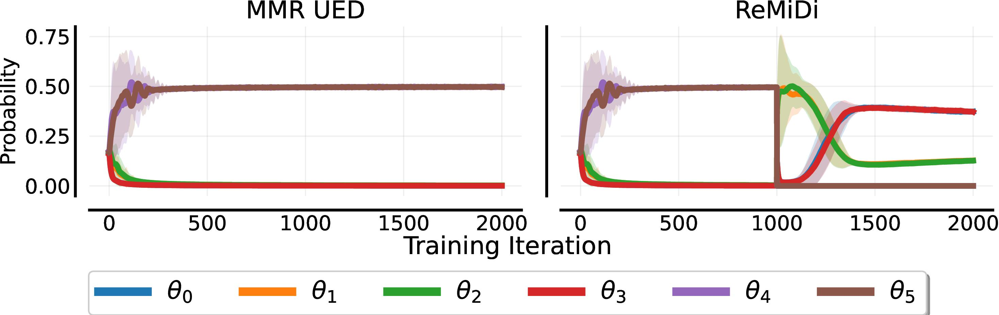Prob
T-Maze & Blindfold
We next consider the T-Maze example discussed earlier. Here the adversary can sample T-mazes or normal mazes. The reward of T-mazes is $+1$ or $-1$ depending on whether the agent reaches the goal or not, and the standard maze reward is the same as is used in prior work
Our second Maze experiment is where the adversary has the choice of blindfolding the agent; in other words, it can zero out the agent's observation.
In both cases, we evaluate on a standard set of held-out mazes.
The following results show that $\text{PLR}^\perp$ with perfect regret as its score function results in poor performance on actual mazes, in both the T-maze and blindfold experiments. The reason for this is that it almost trains exclusively on non-normal-mazes. ReMiDi, by contrast, samples T-mazes initially, and thereafter does not, as they have identical observations with previous MMR levels. This results in better performance on actual mazes.
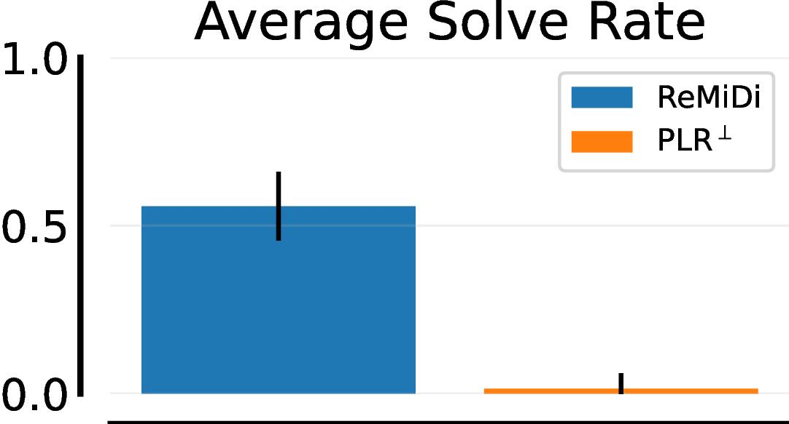TMaze
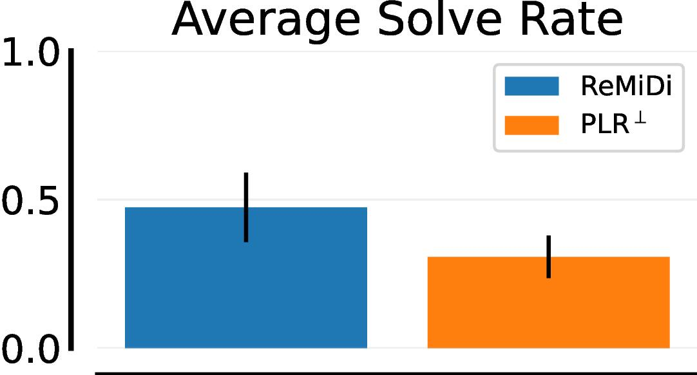Blind
As mentioned, here we show the probability of sampling each type of maze, and $\text{PLR}^\perp$ samples primarily high-irreducible regret levels where the agent can learn nothing more on.
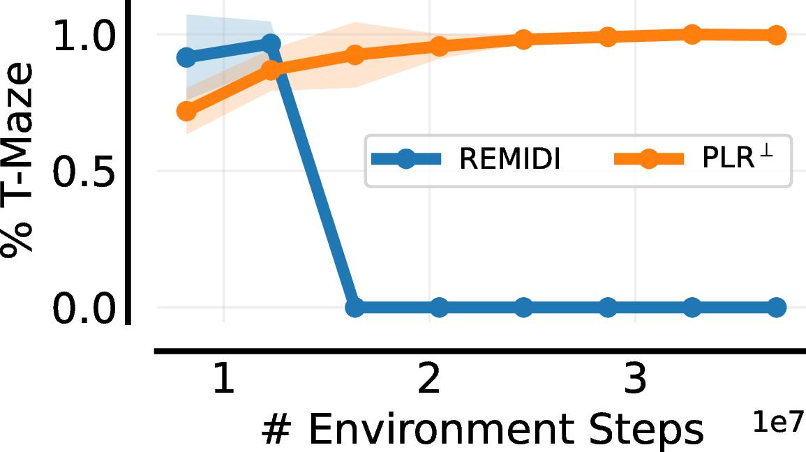TMaze
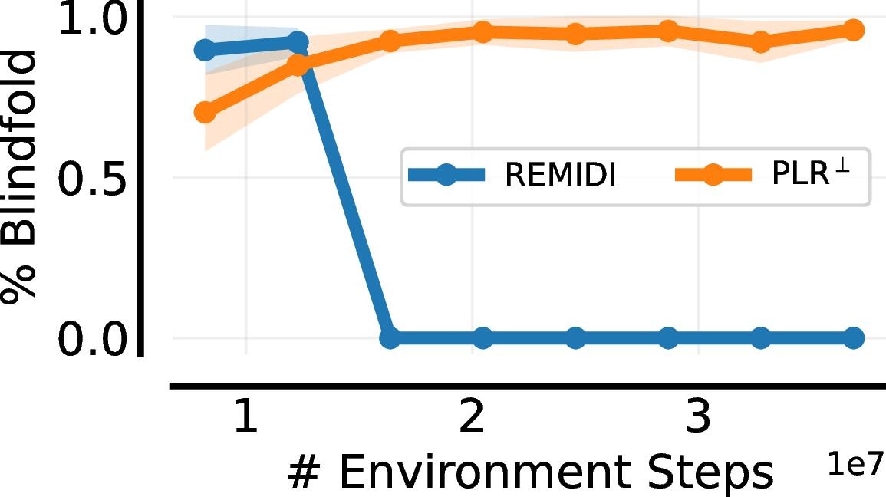Blind
Lever Game
In this environment, inspired by , there are $64$ levers to pull, one of which is correct (reward of $+1$), and pulling a wrong lever results in a reward of $-1$. The adversary can make the correct lever known or unknown to the agent. In the latter case, the reward is multiplied by 10 (to simulate a harder problem having a higher reward).
Our analysis above suggests that regret-based UED should solely sample environments where the correct answer is not known, and the best option for the agent is to guess randomly (because this induces irreducible regret). Training solely on these levels, however, would cause the agent to perform poorly when it observes the correct answer.
Indeed, the following figures show that on levels where the correct lever is not given, $\text{PLR}^\perp$ performs the same as ReMiDi. On levels where the correct answer is given, however, ReMiDi performs perfectly, but $\text{PLR}^\perp$ fails as it nearly never trained on these types of levels.
Importantly, this result shows that both $\text{PLR}^\perp$ and ReMiDi satisfy minimax regret, but $\text{PLR}^\perp$ results in a policy that is effectively random, whereas ReMiDi learns a much more useful policy.
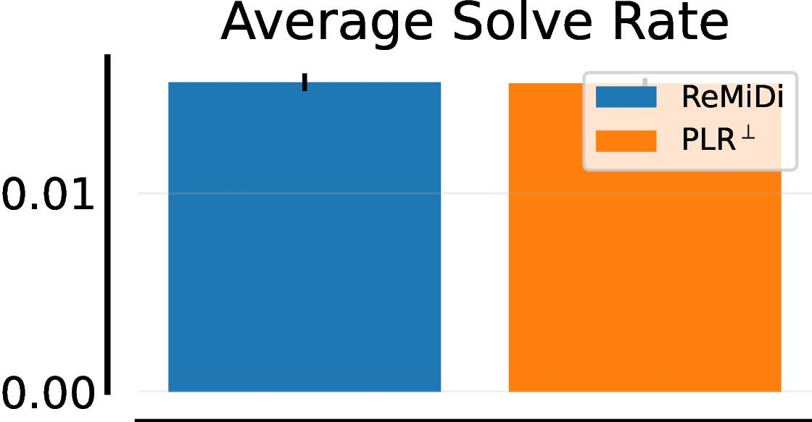Invisible
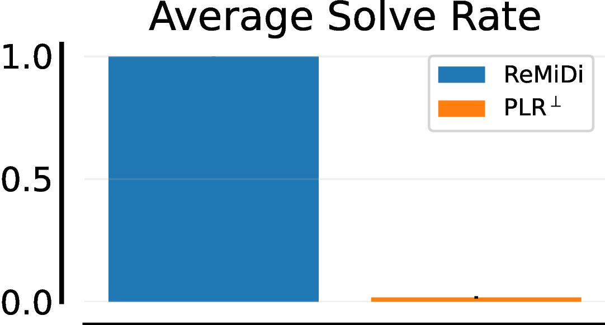Visible
Summary
In summary, we show that minimax regret has a notable failure case when there are environments with high irreducible regret. Our solution concept can address this problem, and ReMiDi results in higher empirical performance in cases like these.
We would like to highlight that, in the same way that minimax regret fixes minimax's problem with unsolvable environments, our solution concept can also fix minimax regret's problem with irreducible regret.
Objective
If there are Unsolvable Levels
If there are Irreducible Regret Levels
Minimax
❌
❌
Minimax Regret
✅
❌
BLP
✅
✅
Illustrating the failure cases of different UED objectives. When there are unsolvable environments, normal minimax tends to fail. While minimax regret solves this problem, when there is irreducible regret, it has a similar issue to minimax. Our new BLP objective can address both of these problems.
Conclusions / Takeaways
In conclusion, we went over the following core concepts:
Regret does not always correspond to learnability, even though in practice high-regret levels are often useful for learning
In cases such as these, minimax regret suffers from the Regret Stagnation problem, manifesting as the adversary sampling primarily levels that provide no learning (e.g., blindfold levels or T-Mazes).
This may cause our agent to, unnecessarily, perform poorly on a large subset of levels, which we'd like to avoid if possible.
Our novel solution concept, called the Bayesian Level Perfect Minimax Regret Policy, is a refinement of minimax regret, and addresses this problem.
We implement a proof-of-concept algorithm, ReMiDi, that empirically addresses this problem.
What now?
If you are interested, have a look at our paper for more details and proofs.
Our code is also publicly available here.
Finally, if you are interested in UED research, have a look at Minimax or JaxUED, two Jax-based UED libraries.